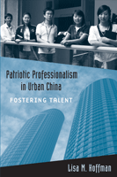

A look at urban professionals in post-Mao China as they balance social responsibility and individual achievement
A look at urban professionals in post-Mao China as they balance social responsibility and individual achievement


 A look at urban professionals in post-Mao China as they balance social responsibility and individual achievement
A look at urban professionals in post-Mao China as they balance social responsibility and individual achievement

|  |
Patriotic Professionalism in Urban ChinaFostering TalentLisa M. Hoffmanpaper EAN: 978-1-43990-035-2 (ISBN: 1-4399-0035-3) |
�Lisa Hoffman has given us an extraordinary study of the now ubiquitous urban professional in China. A critical mediation on debates about neoliberalism, governmentality, and the crafting of selves, this is likewise a beautifully written ethnography of Dalian as a global city. Hoffman takes us into strange but familiar worlds, where social mobility, the marketing of talent, and the mobilization of human capital are central to new forms of capitalist development and, at the same time, informed by a Maoist-era ethics of care for the nation. This is a must read for anyone interested in the brave new world of capitalism in China. A stupendous achievement.�
—Ralph Litzinger, Duke University
In the post-Maoist era, China adopted a strategy for investing in the "quality" of its people—through education and training opportunities—that created talented labor. In her significant ethnographic study, Patriotic Professionalism in Urban China, Lisa Hoffman explains why the development of "human capital" is seen as fundamental for economic growth and national progress. She examines these new urban employees, who were deemed vital to the success of the global city in China, and who hoped for social mobility, a satisfying career, and perhaps a family.
Patriotic Professionalism in Urban China addresses the emergence of this urban professional subject in Dalian, a port city in China. Hoffman identifies who these new professionals are, what choices they have made, and how they have remained closely connected with the nation—although not necessarily the Communist party—leading to a new social form she calls "Patriotic Professionalism."
Hoffman contributes to the understanding of changing urban life in China while providing an analysis of the country's "late-socialist neoliberalism." In the process, she asks pressing questions about how such shifts impact cities, how individuals and families negotiate these changes, and how "choice" itself is a part of the subject formation process for these young professionals.
Excerpt available at www.temple.edu/tempress
"Patriotic Professionalism in Urban China is an important book, one that is the first serious analysis of how the production of urban space is entangled with the production of a professional class. Through a brilliant and sensitive ethnographic examination of the ideal of �talent,� Lisa Hoffman is able to tell us a great deal about how late-socialist China is governed and thereby about the key motifs of neoliberalism, such as choice, autonomy, and self-enterprise."
—Ananya Roy, University of California, Berkeley
"Lisa Hoffman offers sophisticated theorizing and rich ethnographic research in her fascinating account of young urban professionals in China. This excellent book makes a major contribution to our understandings of governance and governmentality, urban spaces and subjectivities, and indeed neoliberalism itself."
—Wendy Larner, University of Bristol
"One of the book's biggest contributions is the way in which Hoffman has documented a particular moment of contemporary China and its rapid change.... Hoffman's [convincing] argument about governmentality is one of her more important here, and the reason that her book deserves to be widely read. While her focus is on careers and young professionals, her analysis is relevant to scholars working in many different areas."
—The China Journal
"There are provocative, refreshing ideas in this book, some of which are especially sensible and fitting in light of recent political tightening by the postsocialist state in China."
— The Journal of Asian Studies
"The book is engaging, well written, and provocative. It will be of great interest to scholars and students interested in labor transformation in the new China, and it contributes to a more nuanced understanding of postsocialist transitional economies. For me, the book provided a wonderful way to become grounded in processes at the social and human end of global city formation. I learned much from reading it. It will be interesting to see a few years from now whether Hoffman�s professional patriots were a transitional phase of labor formation in China."
—Contemporary Sociology
"Hoffman's fascinating account of the emergence of urban professionals in China is based on extensive field study conducted between 1993 and 2003 in Dalian, a prominent city in the country's north-east region....Hoffman makes a number of noteworthy contributions. First, she provides insightful understanding in a well-reconciled manner regarding the otherwise apparent contradictions between participation in a free-market economy and following the dictates of the socialist state.... [A] second contribution is a more nuanced understanding of neoliberalism as such and one that is less exclusive than widely accepted definitions by spanning beyond solely Western circumstances. Here Hoffman also makes the rightful suggestion that the seemingly commonsensical correlation between talent and a global city's prosperity is anything but natural or evolutionary and, in China, very much, as she puts it, a matter of governmental strategy and assemblage. What also emerges is a third contribution in the form of a relatively well-drawn portrait of the persona, if one can call it that, of China's rising professional middle class....Patriotic Professionalism in Urban China is a valuable and worthwhile contribution to our understanding of contemporary China."
— American Ethnologist
Acknowledgments
1. Talent in the Global City: Preparing Dalian for the Twenty-first Century
2. Refiguring Dalian
3. Cultivating Talent
4. Patriotic Professionalism
5. Turning Culture into Profit
6. Gendering Security and the State in Urban China
7. Going Forward: China, Neoliberalism, and Economic Crises
Notes
Glossary
References
Index
Lisa M. Hoffman is Associate Professor in the Urban Studies Program at the University of Washington Tacoma.
Anthropology
Asian Studies
Urban Studies
Urban Life, Landscape, and Policy, edited by Zane L. Miller, David Stradling, and Larry Bennett.
Urban Life, Landscape, and Policy Series, edited by Zane L. Miller, David Stradling, and Larry Bennett, features books that examine past and contemporary cities, focusing on cultural and social issues. The editors seek proposals that analyze processes of urban change relevant to the future of cities and their metropolitan regions, and that examine urban and regional planning, environmental issues, and urban policy studies, thus contributing to ongoing debates.
© 2015 Temple University. All Rights Reserved. This page: http://www.temple.edu/tempress/titles/2036_reg.html.